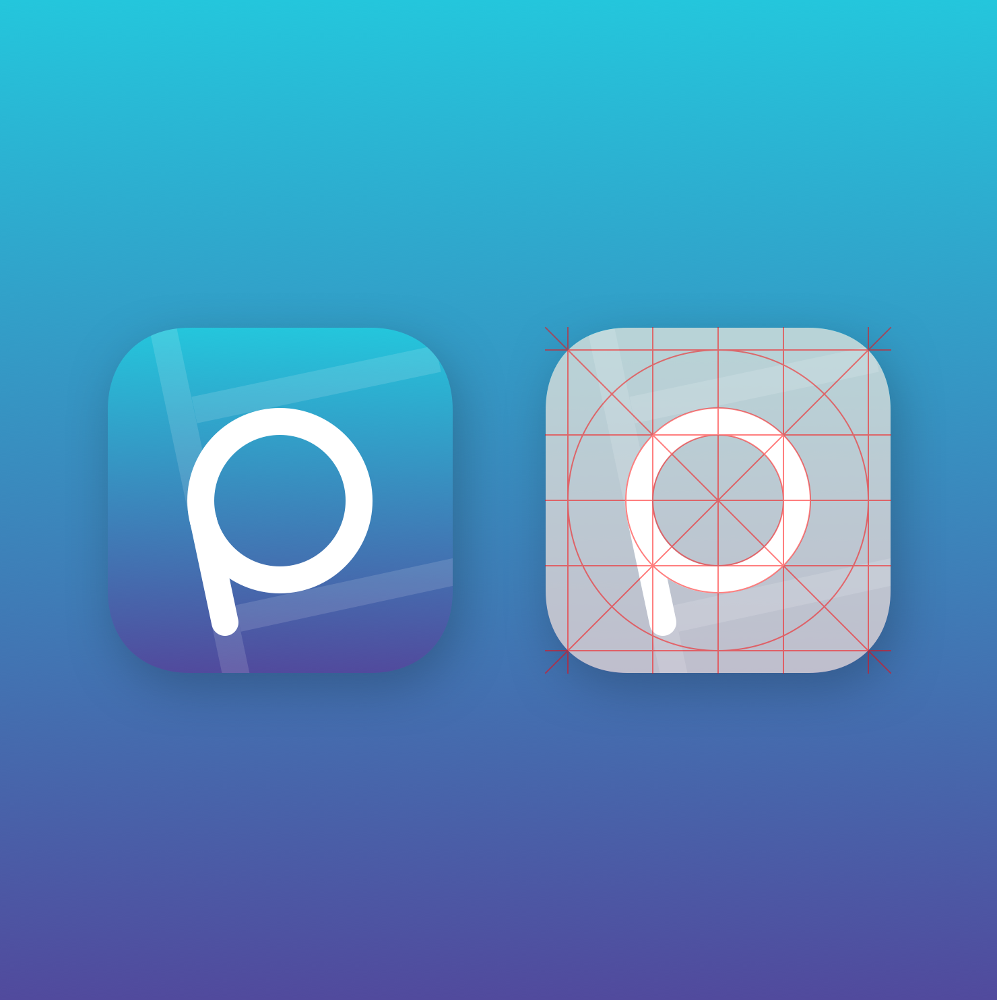
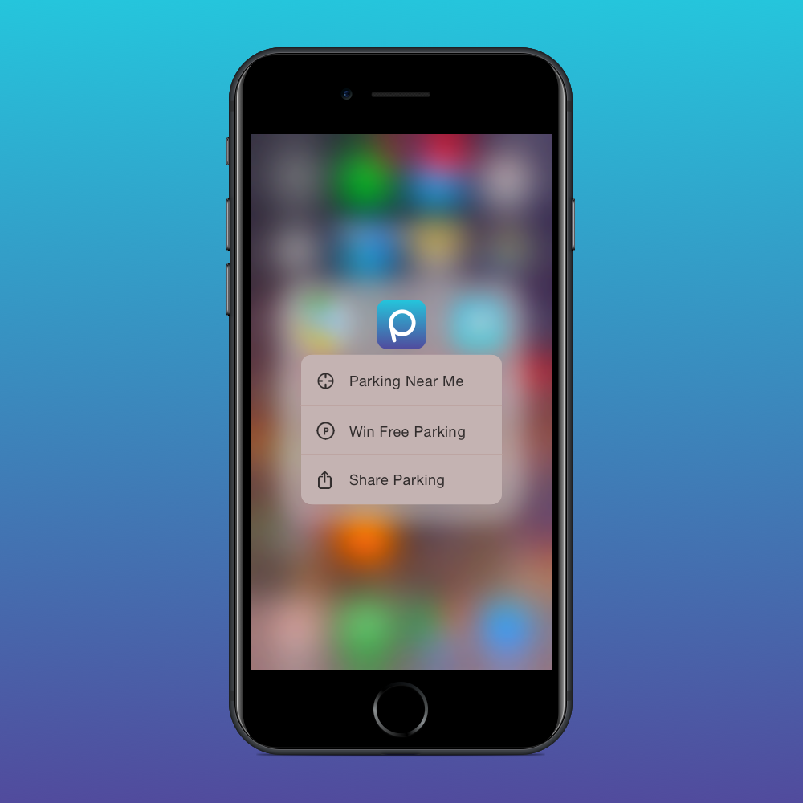
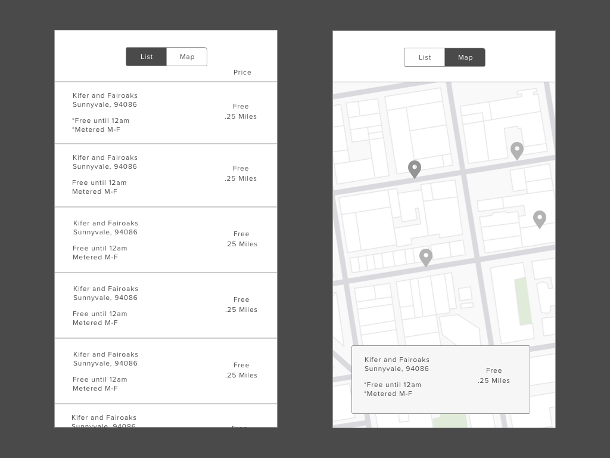
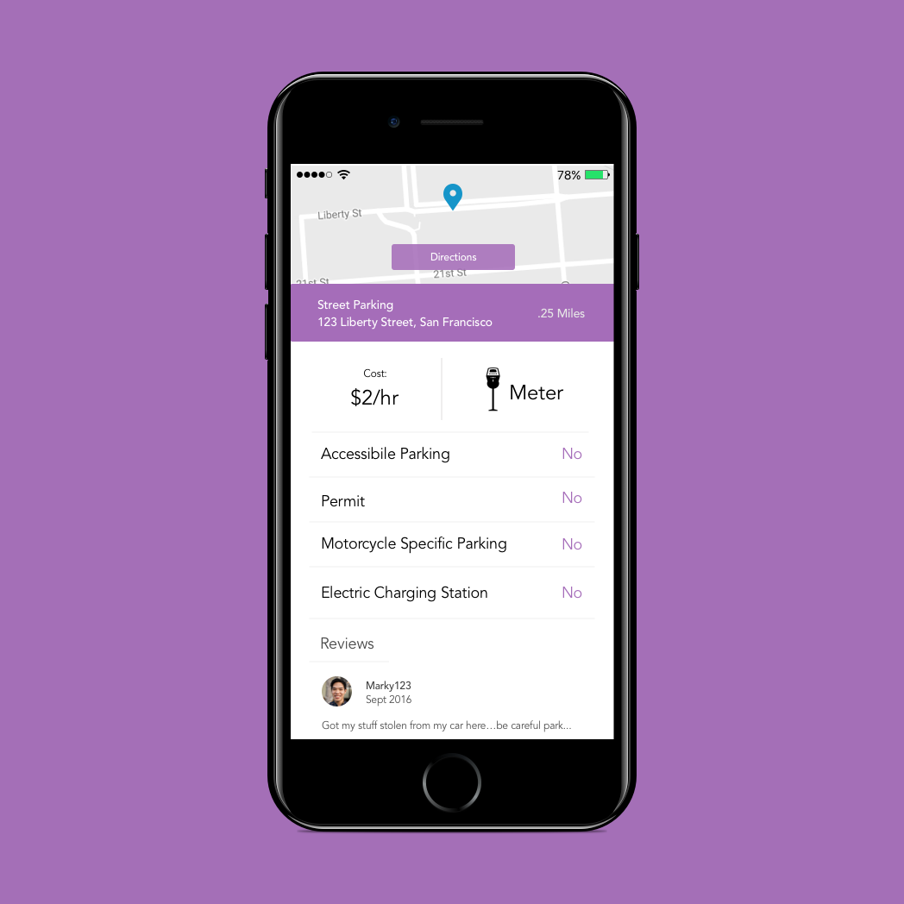

Parking App
Case Study, Interface Design
Sketch 3, Photoshop, Principle
Context Let's face it, finding parking San Francisco is difficult. There are currently 455,000 register vehicles in the San Francisco Area with 442,000 available spots. And it's getting worse, according to the United States Census Bureau, the Bay Area's population has increased by 90,000 people between 2014-2015.
I love San Francisco and for a brief time in 2015, I lived there. However, I also owned and operated a vehicle. There's been countless occasions where I had trouble find parking near my own home, looking for more than 30 minutes for an available parking spot several blocks away. And even though this wasn't the main reason I moved away from the city, it was a contributing factor to my overall decision.
Why address this opportunity? I personally enjoy big cities, There's this energy and vibrance in any metropolitan city unlike any other place. However, the struggle with parking has deterred me from visiting San Francisco on a number of occasions. And even though, there are car sharing services and public transportation. The opportunity here is to provide a better experience to people who need/want to drive around overpopulated cities.
Solution The solution is to find available parking information anywhere with crowdsourced information. With information provided by the transit parking companies such as parkSF and users. We can utilize this information and provide it to any prospective user - Similar to how waze or gasbuddy works.
Initial Parking App sketches for the icon
The icon design for my parking app. The slanted p is centered and boxed in by lines representing a parking lot
Apple 3D touch information regarding information within the parking app
Initial wireframes - List view and map view of the available parking app locations
List view of the available parking locations
Additional informaton regarding the parking spot

Parking App interface - when a user clicks on the pin on the map, information regarding the parking spot will reveal